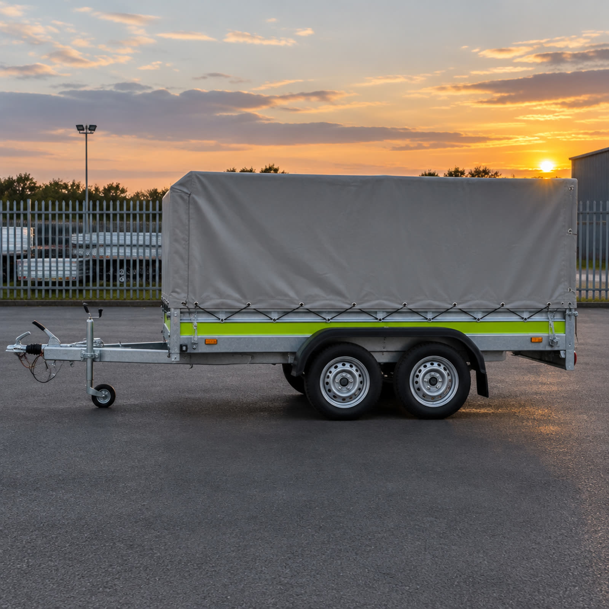

Прицеп на три часа,
а не на целые сутки
Прицепы 3 и 3,5 метра, лафет на 2100 кг, жёсткая сцепка без второго водителя и подкат с поворотной платформой. Тариф по часам: 25–40 рублей за прицеп, 80 за лафет в сутки.
Что везёте?
Выберите груз — покажем, какой прицеп справится и сколько это стоит. Габариты примерные: если груз нестандартный, позвоните, подскажем точно.
Подбор ориентировочный. Категория BE нужна для лафета — проверьте права заранее.
Всё, что есть в прокате
Цены из объявления, без наценки за «выходные» и «срочность». Время считается от выдачи до возврата.
| Позиция | Размеры | 3 часа | 6 часов | Сутки |
|---|---|---|---|---|
| Прицеп №1, тентованный | д. 3,0 · в. 1,60 · ш. 1,40 м | 25 р | 30 р | 35 р |
| Прицеп №2, тент снимается | д. 3,5 · ш. 2,0 · в. 1,7 м | 30 р | 35 р | 40 р |
| Лафет, лебёдка механическая | д. 4,0 · ш. 1,95 м · до 2100 кг · категория BE | — | — | 80 р |
| Жёсткая сцепка | второй водитель не требуется | — | — | 40 р |
| Подкат с поворотной платформой | заводское исполнение | — | — | 60 р |
Инструмент: наличие и стоимость уточняйте по телефону — парк меняется.

Звонок, прицеп, документы — и вы в пути
- Скажите, что везёте и на сколько часов — подберём прицеп
- Приезжаете в Дзержинск, оформляем и цепляем прицеп к вашему фаркопу
- Проверяем свет, крепление и давление в шинах вместе с вами
- Возврат — по факту, оплата за фактическое время по тарифу
Иллюстрация. Наличие конкретного прицепа уточняйте перед выездом.
Сцепка, подкат и инструмент
Жёсткая сцепка решает главную проблему перегона: второй водитель не нужен.
Жёсткая сцепка
Сутки 40 р. Перегоняете вторую машину один, без напарника.
Подкат с платформой
Сутки 60 р. Заводское исполнение, поворотная платформа для манёвров.
Лафет
Сутки 80 р. До 2100 кг, механическая лебёдка, резина категории C.
Инструмент
Наличие и стоимость уточняйте: парк обновляется, что-то уходит в работу.
Коротко о главном
Нужна ли категория BE?
Для лафета — да, категория BE. Для прицепов №1 и №2 достаточно категории B, если полная масса прицепа не превышает разрешённую для вашего автомобиля. Сомневаетесь — позвоните, посчитаем вместе.
Как считается время?
От момента выдачи до возврата. Тарифы: до 3 часов, до 6 часов и сутки. Если вернули раньше — платите по меньшему тарифу.
Прицеп можно взять без тента?
Да, у прицепа №2 тент снимается. Это удобно для высоких грузов: холодильник, шкаф, техника.
Что нужно для оформления?
Документы на автомобиль и права. Условия залога и оформления уточняйте по телефону перед выездом.
Работаете за пределами Дзержинска?
Прокат в Дзержинске, Минская область. Едете в Минск или по району — прицеп ваш на всё оплаченное время.
Скажите груз — назовём цену
Подберём прицеп под размеры, проверим наличие и запишем на удобное время.